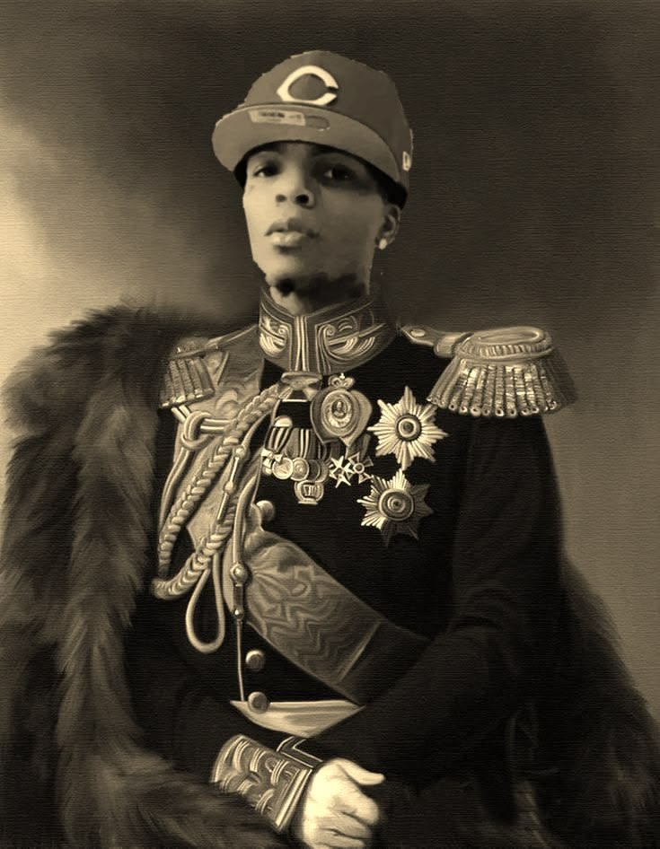

Sabtu 4 Juli 2026
Halo saya Ambut, saya akan menceritakan kisah admin zaman Rongawi kuno.
Suatu hari ada sekitar 1500 pasukan suki ingin menjajah daerah kekuasaan mas Rusdi
di daerah Ngawi Timur. Mendengar hal itu, mas Rusdi pun mempersiapkan pasukannya
agar bersiap melawan para tentara suki. mas Rusdi mempersiapkan 200 meriam muani,
dan mempersiapkan pedang tumpul yang bernama "Batang Kekar Pembunuh Suki Liar". semua
itu atas perintah jendral Imut. Jendral Imut adalah tangan kanan mas Rusdi
Kabar itu pun sampai terdengar di telinga mas Amba. Terdengar hal itu pun mas Amba
ingin memberi bantuan kepada mas Rusdi. Bantuan yang diberikan adalah shotgun kegelapan
shotgun kegelapan jika ditembakkan akan keluar cairan putih panas yang bisa membakar suki
sampai meleleh dan hanya tersisa tulang tulangnya saja.

Tentu saja perwira Fu'ad mempersiapkan diri untuk melawan suki liar
Perwira Fu'ad menyuruh kacungnya mempersiapkan 1000 Batang Kekar Pembunuh Suki.
Suki liar sangat ketar ketir melihat perwira Fu'ad turun tangan lohhyaa takut dibantai.
Suki liar juga sangat ketar ketir melihat mas Amba turun tangan lohhyaa takut dibantai.
orang gila seperti dia asli clek

Dan perang pun dimulai. Begitu kejam meriam muani dan shotgun kegelapan membunuh
ribuan suki liar. Dan begitu kejam perwira Fu'ad membunuh suki hanya bermodalkan
Batang Kekar Pembunuh Suki. Sampai mas Rusdi turun tangan merodok seluruh tentara suki
liar cik. Dan perang pun dimenangkan oleh mas Rusdi.